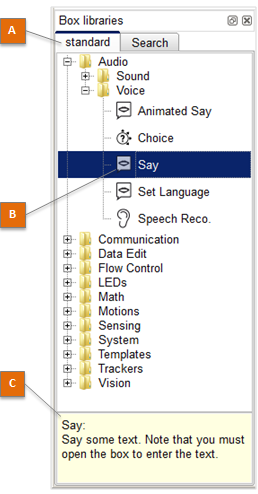
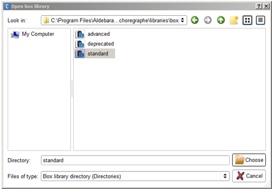
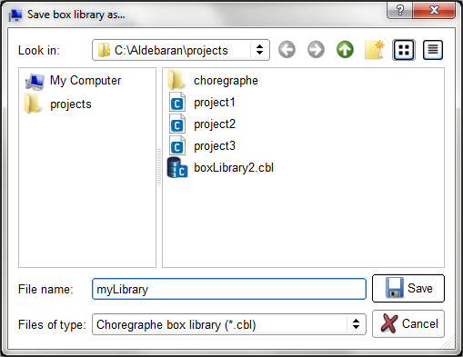
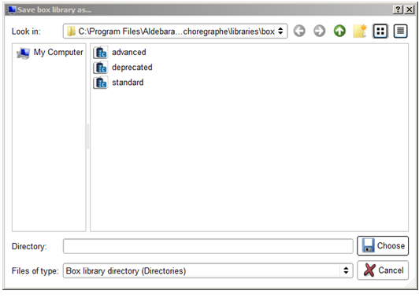

The Box libraries panel displays the currently opened Box libraries:
The table below describes the main parts of the Box libraries panel:
| Part | Name | Description |
|---|---|---|
| A | Tabs | Display all opened Box libraries and the Search panel.
|
| B | Selected Box | Each Box is represented with its name and its image. |
| C | Tooltip | Displays the description of the selected box. |
You can drag and drop any of the boxes contained in a Box library onto the Flow diagram Panel to enrich a Behavior or a Box.
In addition to standard box library, two other Box Libraries are available:
| Step | Action |
|---|---|
Choose Box library > Open box library....  |
|
Select the relevant file type:
For further details, see: Box library available formats. |
|
| Select the Box library to open. | |
| Click Choose to validate your choice. |
You can create or open your own Box library through the Box library menu.
It is then possible for you to customize your Box library:
You can then save or close the opened box library by selecting it (left-click on the tab corresponding to the concerned box library) and then going to the Box library menu to select the action you want to make (save or close).
Note
Note also that the opened box libraries are automatically saved when you exit Choregraphe.
To automatically open your own box libraries at Choregraphe startup:
A box library consists of a list of Boxes.
This list can be organized with directories in order to sort boxes by category for example.
Each box may have attached files (music, image, etc) also included in the box library.
A box library is particularly useful when you often use the same boxes. You can store it in a box library and use and reuse it later.
You can save / open a Box library as:
Note
For further details about saving a project as a CRG file or as a directory, see How to save a box library as a CBL and How to save a box library as a directory.
In versions older than 1.10, box library files were not compressed (the extension was XAL).
| Step | Action |
|---|---|
Choose Box library > Save box library as.... A new window titled “Save box library as...” is displayed:  |
|
| Make sure the file type is Choregraphe box library (*.cbl). | |
| Browse the destination path and complete the “File name” field. | |
| Click Save to validate your choice. |
| Step | Action |
|---|---|
Choose Box library > Save box library as.... A new window titled “Save box library as...” is displayed:  |
|
| Make sure the file type is Box library directory (Directories). | |
| Make sure you have an empty folder and select it. | |
| Click Choose to validate your choice. |